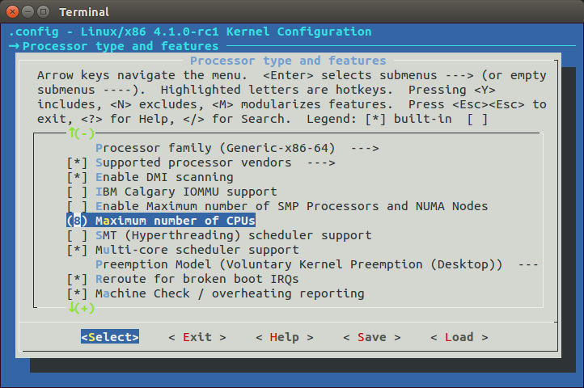

Kernel initialization. Part 7.
The End of the architecture-specific initialization, almost...
This is the seventh part of the Linux Kernel initialization process which covers insides of the setup_arch function from the arch/x86/kernel/setup.c. As you can know from the previous parts, the setup_arch function does some architecture-specific (in our case it is x86_64) initialization stuff like reserving memory for kernel code/data/bss, early scanning of the Desktop Management Interface, early dump of the PCI device and many many more. If you have read the previous part, you can remember that we've finished it at the setup_real_mode function. In the next step, as we set limit of the memblock to the all mapped pages, we can see the call of the setup_log_buf function from the kernel/printk/printk.c.
The setup_log_buf function setups kernel cyclic buffer and its length depends on the CONFIG_LOG_BUF_SHIFT configuration option. As we can read from the documentation of the CONFIG_LOG_BUF_SHIFT it can be between 12 and 21. In the insides, buffer defined as array of chars:
#define __LOG_BUF_LEN (1 << CONFIG_LOG_BUF_SHIFT)
static char __log_buf[__LOG_BUF_LEN] __aligned(LOG_ALIGN);
static char *log_buf = __log_buf;
Now let's look on the implementation of the setup_log_buf function. It starts with check that current buffer is empty (It must be empty, because we just setup it) and another check that it is early setup. If setup of the kernel log buffer is not early, we call the log_buf_add_cpu function which increase size of the buffer for every CPU:
if (log_buf != __log_buf)
return;
if (!early && !new_log_buf_len)
log_buf_add_cpu();
We will not research log_buf_add_cpu function, because as you can see in the setup_arch, we call setup_log_buf as:
setup_log_buf(1);
where 1 means that it is early setup. In the next step we check new_log_buf_len variable which is updated length of the kernel log buffer and allocate new space for the buffer with the memblock_virt_alloc function for it, or just return.
As kernel log buffer is ready, the next function is reserve_initrd. You can remember that we already called the early_reserve_initrd function in the fourth part of the Kernel initialization. Now, as we reconstructed direct memory mapping in the init_mem_mapping function, we need to move initrd into directly mapped memory. The reserve_initrd function starts from the definition of the base address and end address of the initrd and check that initrd is provided by a bootloader. All the same as what we saw in the early_reserve_initrd. But instead of the reserving place in the memblock area with the call of the memblock_reserve function, we get the mapped size of the direct memory area and check that the size of the initrd is not greater than this area with:
mapped_size = memblock_mem_size(max_pfn_mapped);
if (ramdisk_size >= (mapped_size>>1))
panic("initrd too large to handle, "
"disabling initrd (%lld needed, %lld available)\n",
ramdisk_size, mapped_size>>1);
You can see here that we call memblock_mem_size function and pass the max_pfn_mapped to it, where max_pfn_mapped contains the highest direct mapped page frame number. If you do not remember what is page frame number, explanation is simple: First 12 bits of the virtual address represent offset in the physical page or page frame. If we right-shift out 12 bits of the virtual address, we'll discard offset part and will get Page Frame Number. In the memblock_mem_size we go through the all memblock mem (not reserved) regions and calculates size of the mapped pages and return it to the mapped_size variable (see code above). As we got amount of the direct mapped memory, we check that size of the initrd is not greater than mapped pages. If it is greater we just call panic which halts the system and prints famous Kernel panic message. In the next step we print information about the initrd size. We can see the result of this in the dmesg output:
[0.000000] RAMDISK: [mem 0x36d20000-0x37687fff]
and relocate initrd to the direct mapping area with the relocate_initrd function. In the start of the relocate_initrd function we try to find a free area with the memblock_find_in_range function:
relocated_ramdisk = memblock_find_in_range(0, PFN_PHYS(max_pfn_mapped), area_size, PAGE_SIZE);
if (!relocated_ramdisk)
panic("Cannot find place for new RAMDISK of size %lld\n",
ramdisk_size);
The memblock_find_in_range function tries to find a free area in a given range, in our case from 0 to the maximum mapped physical address and size must equal to the aligned size of the initrd. If we didn't find a area with the given size, we call panic again. If all is good, we start to relocated RAM disk to the down of the directly mapped memory in the next step.
In the end of the reserve_initrd function, we free memblock memory which occupied by the ramdisk with the call of the:
memblock_free(ramdisk_image, ramdisk_end - ramdisk_image);
After we relocated initrd ramdisk image, the next function is vsmp_init from the arch/x86/kernel/vsmp_64.c. This function initializes support of the ScaleMP vSMP. As I already wrote in the previous parts, this chapter will not cover non-related x86_64 initialization parts (for example as the current or ACPI, etc.). So we will skip implementation of this for now and will back to it in the part which cover techniques of parallel computing.
The next function is io_delay_init from the arch/x86/kernel/io_delay.c. This function allows to override default I/O delay 0x80 port. We already saw I/O delay in the Last preparation before transition into protected mode, now let's look on the io_delay_init implementation:
void __init io_delay_init(void)
{
if (!io_delay_override)
dmi_check_system(io_delay_0xed_port_dmi_table);
}
This function check io_delay_override variable and overrides I/O delay port if io_delay_override is set. We can set io_delay_override variably by passing io_delay option to the kernel command line. As we can read from the Documentation/kernel-parameters.txt, io_delay option is:
io_delay= [X86] I/O delay method
0x80
Standard port 0x80 based delay
0xed
Alternate port 0xed based delay (needed on some systems)
udelay
Simple two microseconds delay
none
No delay
We can see io_delay command line parameter setup with the early_param macro in the arch/x86/kernel/io_delay.c
early_param("io_delay", io_delay_param);
More about early_param you can read in the previous part. So the io_delay_param function which setups io_delay_override variable will be called in the do_early_param function. io_delay_param function gets the argument of the io_delay kernel command line parameter and sets io_delay_type depends on it:
static int __init io_delay_param(char *s)
{
if (!s)
return -EINVAL;
if (!strcmp(s, "0x80"))
io_delay_type = CONFIG_IO_DELAY_TYPE_0X80;
else if (!strcmp(s, "0xed"))
io_delay_type = CONFIG_IO_DELAY_TYPE_0XED;
else if (!strcmp(s, "udelay"))
io_delay_type = CONFIG_IO_DELAY_TYPE_UDELAY;
else if (!strcmp(s, "none"))
io_delay_type = CONFIG_IO_DELAY_TYPE_NONE;
else
return -EINVAL;
io_delay_override = 1;
return 0;
}
The next functions are acpi_boot_table_init, early_acpi_boot_init and initmem_init after the io_delay_init, but as I wrote above we will not cover ACPI related stuff in this Linux Kernel initialization process chapter.
Allocate area for DMA
In the next step we need to allocate area for the Direct memory access with the dma_contiguous_reserve function which is defined in the drivers/base/dma-contiguous.c. DMA is a special mode when devices communicate with memory without CPU. Note that we pass one parameter - max_pfn_mapped << PAGE_SHIFT, to the dma_contiguous_reserve function and as you can understand from this expression, this is limit of the reserved memory. Let's look on the implementation of this function. It starts from the definition of the following variables:
phys_addr_t selected_size = 0;
phys_addr_t selected_base = 0;
phys_addr_t selected_limit = limit;
bool fixed = false;
where first represents size in bytes of the reserved area, second is base address of the reserved area, third is end address of the reserved area and the last fixed parameter shows where to place reserved area. If fixed is 1 we just reserve area with the memblock_reserve, if it is 0 we allocate space with the kmemleak_alloc. In the next step we check size_cmdline variable and if it is not equal to -1 we fill all variables which you can see above with the values from the cma kernel command line parameter:
if (size_cmdline != -1) {
...
...
...
}
You can find in this source code file definition of the early parameter:
early_param("cma", early_cma);
where cma is:
cma=nn[MG]@[start[MG][-end[MG]]]
[ARM,X86,KNL]
Sets the size of kernel global memory area for
contiguous memory allocations and optionally the
placement constraint by the physical address range of
memory allocations. A value of 0 disables CMA
altogether. For more information, see
include/linux/dma-contiguous.h
If we will not pass cma option to the kernel command line, size_cmdline will be equal to -1. In this way we need to calculate size of the reserved area which depends on the following kernel configuration options:
CONFIG_CMA_SIZE_SEL_MBYTES- size in megabytes, default globalCMAarea, which is equal toCMA_SIZE_MBYTES * SZ_1MorCONFIG_CMA_SIZE_MBYTES * 1M;CONFIG_CMA_SIZE_SEL_PERCENTAGE- percentage of total memory;CONFIG_CMA_SIZE_SEL_MIN- use lower value;CONFIG_CMA_SIZE_SEL_MAX- use higher value.
As we calculated the size of the reserved area, we reserve area with the call of the dma_contiguous_reserve_area function which first of all calls:
ret = cma_declare_contiguous(base, size, limit, 0, 0, fixed, res_cma);
function. The cma_declare_contiguous reserves contiguous area from the given base address with given size. After we reserved area for the DMA, next function is the memblock_find_dma_reserve. As you can understand from its name, this function counts the reserved pages in the DMA area. This part will not cover all details of the CMA and DMA, because they are big. We will see much more details in the special part in the Linux Kernel Memory management which covers contiguous memory allocators and areas.
Initialization of the sparse memory
The next step is the call of the function - x86_init.paging.pagetable_init. If you try to find this function in the Linux kernel source code, in the end of your search, you will see the following macro:
#define native_pagetable_init paging_init
which expands as you can see to the call of the paging_init function from the arch/x86/mm/init_64.c. The paging_init function initializes sparse memory and zone sizes. First of all what's zones and what is it Sparsemem. The Sparsemem is a special foundation in the Linux kernel memory manager which used to split memory area into different memory banks in the NUMA systems. Let's look on the implementation of the paging_init function:
void __init paging_init(void)
{
sparse_memory_present_with_active_regions(MAX_NUMNODES);
sparse_init();
node_clear_state(0, N_MEMORY);
if (N_MEMORY != N_NORMAL_MEMORY)
node_clear_state(0, N_NORMAL_MEMORY);
zone_sizes_init();
}
As you can see there is call of the sparse_memory_present_with_active_regions function which records a memory area for every NUMA node to the array of the mem_section structure which contains a pointer to the structure of the array of struct page. The next sparse_init function allocates non-linear mem_section and mem_map. In the next step we clear state of the movable memory nodes and initialize sizes of zones. Every NUMA node is divided into a number of pieces which are called - zones. So, zone_sizes_init function from the arch/x86/mm/init.c initializes size of zones.
Again, this part and next parts do not cover this theme in full details. There will be special part about NUMA.
vsyscall mapping
The next step after SparseMem initialization is setting of the trampoline_cr4_features which must contain content of the cr4 Control register. First of all we need to check that current CPU has support of the cr4 register and if it has, we save its content to the trampoline_cr4_features which is storage for cr4 in the real mode:
if (boot_cpu_data.cpuid_level >= 0) {
mmu_cr4_features = __read_cr4();
if (trampoline_cr4_features)
*trampoline_cr4_features = mmu_cr4_features;
}
The next function which you can see is map_vsyscal from the arch/x86/entry/vsyscall/vsyscall_64.c. This function maps memory space for vsyscalls and depends on CONFIG_X86_VSYSCALL_EMULATION kernel configuration option. Actually vsyscall is a special segment which provides fast access to the certain system calls like getcpu, etc. Let's look on implementation of this function:
void __init map_vsyscall(void)
{
extern char __vsyscall_page;
unsigned long physaddr_vsyscall = __pa_symbol(&__vsyscall_page);
if (vsyscall_mode != NONE)
__set_fixmap(VSYSCALL_PAGE, physaddr_vsyscall,
vsyscall_mode == NATIVE
? PAGE_KERNEL_VSYSCALL
: PAGE_KERNEL_VVAR);
BUILD_BUG_ON((unsigned long)__fix_to_virt(VSYSCALL_PAGE) !=
(unsigned long)VSYSCALL_ADDR);
}
In the beginning of the map_vsyscall we can see definition of two variables. The first is extern variable __vsyscall_page. As a extern variable, it defined somewhere in other source code file. Actually we can see definition of the __vsyscall_page in the arch/x86/entry/vsyscall/vsyscall_emu_64.S. The __vsyscall_page symbol points to the aligned calls of the vsyscalls as gettimeofday, etc.:
.globl __vsyscall_page
.balign PAGE_SIZE, 0xcc
.type __vsyscall_page, @object
__vsyscall_page:
mov $__NR_gettimeofday, %rax
syscall
ret
.balign 1024, 0xcc
mov $__NR_time, %rax
syscall
ret
...
...
...
The second variable is physaddr_vsyscall which just stores physical address of the __vsyscall_page symbol. In the next step we check the vsyscall_mode variable, and if it is not equal to NONE, it is EMULATE by default:
static enum { EMULATE, NATIVE, NONE } vsyscall_mode = EMULATE;
And after this check we can see the call of the __set_fixmap function which calls native_set_fixmap with the same parameters:
void native_set_fixmap(enum fixed_addresses idx, unsigned long phys, pgprot_t flags)
{
__native_set_fixmap(idx, pfn_pte(phys >> PAGE_SHIFT, flags));
}
void __native_set_fixmap(enum fixed_addresses idx, pte_t pte)
{
unsigned long address = __fix_to_virt(idx);
if (idx >= __end_of_fixed_addresses) {
BUG();
return;
}
set_pte_vaddr(address, pte);
fixmaps_set++;
}
Here we can see that native_set_fixmap makes value of Page Table Entry from the given physical address (physical address of the __vsyscall_page symbol in our case) and calls internal function - __native_set_fixmap. Internal function gets the virtual address of the given fixed_addresses index (VSYSCALL_PAGE in our case) and checks that given index is not greater than end of the fix-mapped addresses. After this we set page table entry with the call of the set_pte_vaddr function and increase count of the fix-mapped addresses. And in the end of the map_vsyscall we check that virtual address of the VSYSCALL_PAGE (which is first index in the fixed_addresses) is not greater than VSYSCALL_ADDR which is -10UL << 20 or ffffffffff600000 with the BUILD_BUG_ON macro:
BUILD_BUG_ON((unsigned long)__fix_to_virt(VSYSCALL_PAGE) !=
(unsigned long)VSYSCALL_ADDR);
Now vsyscall area is in the fix-mapped area. That's all about map_vsyscall, if you do not know anything about fix-mapped addresses, you can read Fix-Mapped Addresses and ioremap. We will see more about vsyscalls in the vsyscalls and vdso part.
Getting the SMP configuration
You may remember how we made a search of the SMP configuration in the previous part. Now we need to get the SMP configuration if we found it. For this we check smp_found_config variable which we set in the smp_scan_config function (read about it the previous part) and call the get_smp_config function:
if (smp_found_config)
get_smp_config();
The get_smp_config expands to the x86_init.mpparse.default_get_smp_config function which is defined in the arch/x86/kernel/mpparse.c. This function defines a pointer to the multiprocessor floating pointer structure - mpf_intel (you can read about it in the previous part) and does some checks:
struct mpf_intel *mpf = mpf_found;
if (!mpf)
return;
if (acpi_lapic && early)
return;
Here we can see that multiprocessor configuration was found in the smp_scan_config function or just return from the function if not. The next check is acpi_lapic and early. And as we did this checks, we start to read the SMP configuration. As we finished reading it, the next step is - prefill_possible_map function which makes preliminary filling of the possible CPU's cpumask (more about it you can read in the Introduction to the cpumasks).
The rest of the setup_arch
Here we are getting to the end of the setup_arch function. The rest of function of course is important, but details about these stuff will not will not be included in this part. We will just take a short look on these functions, because although they are important as I wrote above, they cover non-generic kernel features related with the NUMA, SMP, ACPI and APICs, etc. First of all, the next call of the init_apic_mappings function. As we can understand this function sets the address of the local APIC. The next is x86_io_apic_ops.init and this function initializes I/O APIC. Please note that we will see all details related with APIC in the chapter about interrupts and exceptions handling. In the next step we reserve standard I/O resources like DMA, TIMER, FPU, etc., with the call of the x86_init.resources.reserve_resources function. Following is mcheck_init function initializes Machine check Exception and the last is register_refined_jiffies which registers jiffy (There will be separate chapter about timers in the kernel).
So that's all. Finally we have finished with the big setup_arch function in this part. Of course as I already wrote many times, we did not see full details about this function, but do not worry about it. We will be back more than once to this function from different chapters for understanding how different platform-dependent parts are initialized.
That's all, and now we can back to the start_kernel from the setup_arch.
Back to the main.c
As I wrote above, we have finished with the setup_arch function and now we can back to the start_kernel function from the init/main.c. As you may remember or saw yourself, start_kernel function as big as the setup_arch. So the couple of the next part will be dedicated to learning of this function. So, let's continue with it. After the setup_arch we can see the call of the mm_init_cpumask function. This function sets the cpumask pointer to the memory descriptor cpumask. We can look on its implementation:
static inline void mm_init_cpumask(struct mm_struct *mm)
{
#ifdef CONFIG_CPUMASK_OFFSTACK
mm->cpu_vm_mask_var = &mm->cpumask_allocation;
#endif
cpumask_clear(mm->cpu_vm_mask_var);
}
As you can see in the init/main.c, we pass memory descriptor of the init process to the mm_init_cpumask and depends on CONFIG_CPUMASK_OFFSTACK configuration option we clear TLB switch cpumask.
In the next step we can see the call of the following function:
setup_command_line(command_line);
This function takes pointer to the kernel command line allocates a couple of buffers to store command line. We need a couple of buffers, because one buffer used for future reference and accessing to command line and one for parameter parsing. We will allocate space for the following buffers:
saved_command_line- will contain boot command line;initcall_command_line- will contain boot command line. will be used in thedo_initcall_level;static_command_line- will contain command line for parameters parsing.
We will allocate space with the memblock_virt_alloc function. This function calls memblock_virt_alloc_try_nid which allocates boot memory block with memblock_reserve if slab is not available or uses kzalloc_node (more about it will be in the Linux memory management chapter). The memblock_virt_alloc uses BOOTMEM_LOW_LIMIT (physical address of the (PAGE_OFFSET + 0x1000000) value) and BOOTMEM_ALLOC_ACCESSIBLE (equal to the current value of the memblock.current_limit) as minimum address of the memory region and maximum address of the memory region.
Let's look on the implementation of the setup_command_line:
static void __init setup_command_line(char *command_line)
{
saved_command_line =
memblock_virt_alloc(strlen(boot_command_line) + 1, 0);
initcall_command_line =
memblock_virt_alloc(strlen(boot_command_line) + 1, 0);
static_command_line = memblock_virt_alloc(strlen(command_line) + 1, 0);
strcpy(saved_command_line, boot_command_line);
strcpy(static_command_line, command_line);
}
Here we can see that we allocate space for the three buffers which will contain kernel command line for the different purposes (read above). And as we allocated space, we store boot_command_line in the saved_command_line and command_line (kernel command line from the setup_arch) to the static_command_line.
The next function after the setup_command_line is the setup_nr_cpu_ids. This function setting nr_cpu_ids (number of CPUs) according to the last bit in the cpu_possible_mask (more about it you can read in the chapter describes cpumasks concept). Let's look on its implementation:
void __init setup_nr_cpu_ids(void)
{
nr_cpu_ids = find_last_bit(cpumask_bits(cpu_possible_mask),NR_CPUS) + 1;
}
Here nr_cpu_ids represents number of CPUs, NR_CPUS represents the maximum number of CPUs which we can set in configuration time:

Actually we need to call this function, because NR_CPUS can be greater than actual amount of the CPUs in the your computer. Here we can see that we call find_last_bit function and pass two parameters to it:
cpu_possible_maskbits;- maximum number of CPUS.
In the setup_arch we can find the call of the prefill_possible_map function which calculates and writes to the cpu_possible_mask actual number of the CPUs. We call the find_last_bit function which takes the address and maximum size to search and returns bit number of the first set bit. We passed cpu_possible_mask bits and maximum number of the CPUs. First of all the find_last_bit function splits given unsigned long address to the words:
words = size / BITS_PER_LONG;
where BITS_PER_LONG is 64 on the x86_64. As we got amount of words in the given size of the search data, we need to check is given size does not contain partial words with the following check:
if (size & (BITS_PER_LONG-1)) {
tmp = (addr[words] & (~0UL >> (BITS_PER_LONG
- (size & (BITS_PER_LONG-1)))));
if (tmp)
goto found;
}
if it contains partial word, we mask the last word and check it. If the last word is not zero, it means that current word contains at least one set bit. We go to the found label:
found:
return words * BITS_PER_LONG + __fls(tmp);
Here you can see __fls function which returns last set bit in a given word with help of the bsr instruction:
static inline unsigned long __fls(unsigned long word)
{
asm("bsr %1,%0"
: "=r" (word)
: "rm" (word));
return word;
}
The bsr instruction which scans the given operand for first bit set. If the last word is not partial we going through the all words in the given address and trying to find first set bit:
while (words) {
tmp = addr[--words];
if (tmp) {
found:
return words * BITS_PER_LONG + __fls(tmp);
}
}
Here we put the last word to the tmp variable and check that tmp contains at least one set bit. If a set bit found, we return the number of this bit. If no one words do not contains set bit we just return given size:
return size;
After this nr_cpu_ids will contain the correct amount of the available CPUs.
That's all.
Conclusion
It is the end of the seventh part about the Linux kernel initialization process. In this part, finally we have finished with the setup_arch function and returned to the start_kernel function. In the next part we will continue to learn generic kernel code from the start_kernel and will continue our way to the first init process.
If you have any questions or suggestions write me a comment or ping me at twitter.
Please note that English is not my first language, And I am really sorry for any inconvenience. If you find any mistakes please send me PR to linux-insides.